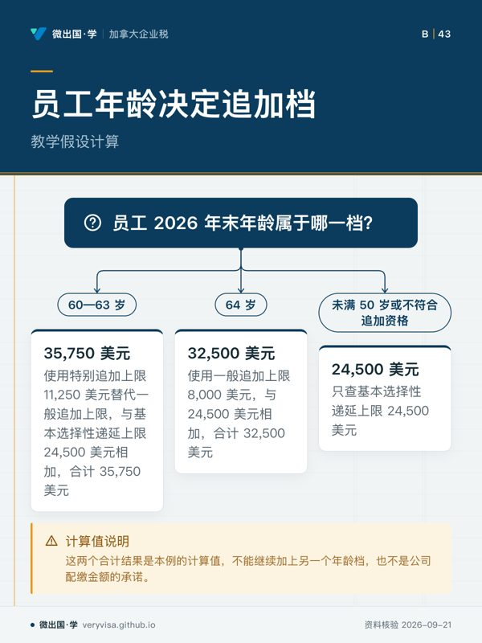
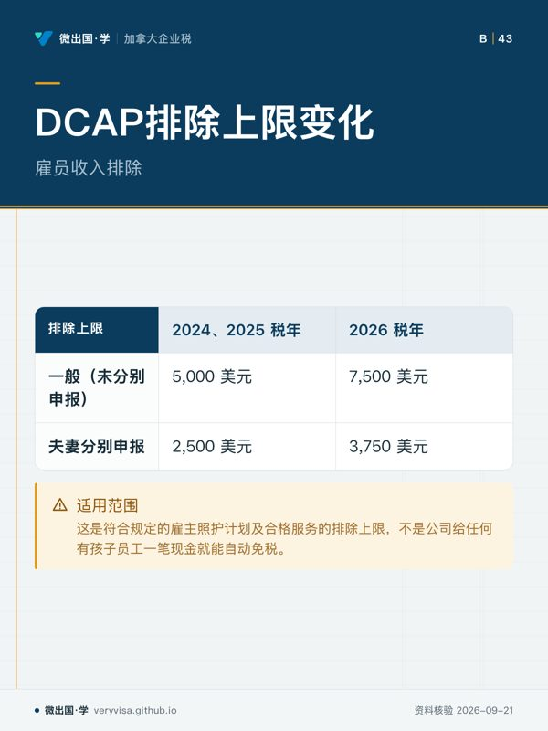

适用口径：2026 美国联邦税年，美国子公司作为实际雇主执行普通 401(k) 及合格 dependent care assistance program 的情形。核实日期：2026-09-10；复核日期：2027-01-31。所有金额均为美元；SIMPLE 等特殊计划须使用自己的限制，加拿大 RPP、RRSP 不能套用本表。
公司给员工提供福利，不能只把“今年税法上限提高了”发给人事部门。法定上限、公司计划允许的供款、员工实际选择、工资扣减与计划收款，是五件需要相互对得上的事。如果公司计划没有采用新额度，员工不能凭网页自行要求多扣；如果工资已经扣走而计划没有收到，也不能把年度累计显示正确当作完成。
本课解决美国子公司福利执行的两个具体问题：退休供款按年龄、前一年工资怎样分流；照护福利怎样从计划支出进入工资申报。两项都由雇主计划和工资流程连接，但各自有独立限额与资格。它们不是一个可以互相挪用的“免税福利钱包”，也不能作为股东个人 IRA 或加拿大退休账户的供款指南。
先把计划文件变成可执行的工资规则
开启年度福利登记时，HR 应先取得已生效的计划文件，确认参加资格、允许的供款类型、生效日期与公司配缴安排。财务再检查工资收入类别与汇款对象。只有公司计划允许、员工符合资格并作出有效选择的金额，才进入实际扣减。税法给出的最高额不等于雇主必须提供同额福利，也不等于每个员工都有足够报酬使用全部额度。
建议为每名参加者保留一份最小执行记录：计划身份、当年年末年龄、选择文件、基本供款累计、追加供款累计、税前与 Roth 分配、雇主供款及受托方入账。记录中的年龄必须能回到出生资料，前一年工资必须能回到适用雇主的工资记录；不要只让员工在表上勾选“可以追加”。涉及关联实体与并购的历史工资归属，应由计划管理员确认。
这份资料并不要求 HR 取得员工完整个人报税表。雇主需要的是依法执行计划所需的信息，而不是尽可能多的家庭资料。个人跨雇主供款、配偶福利等由员工配合确认；存在缺口时，注明尚待确认的条件，不能用“集团内部都认识”替代文件。
退休供款的三个金额要按顺序使用
下面是普通 401(k) 等适用计划的雇员供款参数，核实于 2026-09-10，复核于 2027-01-31。它们是雇员选择性递延及追加供款限制，不是包括雇主供款在内的计划全部年度供款上限。IRS 选择性供款说明
| 参数 | 2024 税年 | 2025 税年 | 2026 税年 |
|---|---|---|---|
| 基本选择性递延上限 | 23,000 | 23,500 | 24,500 |
| 一般年满 50 岁追加上限 | 7,500 | 7,500 | 8,000 |
| 年末年龄 60—63 岁特别追加上限 | 尚无这一特别档 | 11,250 | 11,250 |
2026 年符合特别年龄档的参加者，使用 11,250 美元替代一般追加上限，而不是先加 8,000 再加 11,250。其他符合一般追加条件的人，才走一般档；没有追加资格的人只查基本供款限制。计划还必须允许这些供款。把年龄档设计为互斥选择，能避免两个上限同时被工资人员选中。IRS 追加供款说明
教学假设：员工在 2026 年末为 62 岁，报酬足够、计划允许特别追加且其他条件满足，雇员基本与特别追加的合计上限为 24,500 + 11,250，即 35,750 美元。如果年末年龄改为 64 岁，在符合一般追加条件的情况下，合计改为 24,500 + 8,000，即 32,500 美元。这两个结果是本例的计算值，不能继续加上另一个年龄档，也不是公司配缴金额的承诺。
工资累计还要区分税前与 designated Roth 供款：两者可能共同使用同一基本递延限额，不能各获得一份基本额度。雇主配缴和其他雇主供款则需要另外检查适用的总供款限制、计划条款及资格。仅检查员工扣款是否低于表中金额，不能证明整份退休计划合规。
高薪者追加供款，要回看前一年工资
这一条的 150,000 美元，是执行 2026 年 Roth 追加要求时，观察前一年度相关工资的门槛。对该规则覆盖的参加者，如果 2025 年在计划发起雇主处的适用工资超过 150,000 美元，2026 年追加供款需要按 Roth 方式处理；判断对象不是员工 2026 年预计家庭收入，也不是个人 MAGI。基本递延部分不因这条追加规则自动全部变成 Roth。IRS 2026 年退休计划限额公告
这里最容易发生的错误是看错年度。员工今年收入下降，不必然解除基于去年工资触发的要求；今年大幅加薪，也不能跳过前一年事实直接作判断。门槛措辞是“超过”，在边界处要按正式规则核对，不能把“超过”改成“达到”。员工去年在另一实体取得收入、今年转入子公司时，尤其不能把全年个人总工资直接当成本雇主工资。
执行上应分成两次检查。先判断员工是否有追加供款资格以及适用哪一年龄档，再判断追加部分的税务方式。只做第二次检查会让没有追加资格的人进入追加通道；只做第一次检查则可能把应走 Roth 的金额继续记为税前。公司如果使用外部计划管理员，应把这两个判定字段连同依据一并交接，并核对工资系统和计划记录是否采取相同处理。
发现当年已扣错时，应立即核清发生期间、金额、工资报告与实际计划入账，再按计划及税务更正程序处理。不要在下一期随意记一笔反向扣款就宣称已恢复；员工现金、计划资产与工资税基可能需要分别调整。更正回执与原始记录一起保存，才能解释年底数字为何变化。
照护福利提高的是排除上限，不是任意报销权
合格 DCAP 的雇员收入排除上限，在 2024、2025 税年通常为 5,000 美元，夫妻分别申报为 2,500 美元；2026 税年分别提高到 7,500 与 3,750 美元，对应。这里讨论的是符合规定的雇主照护计划及合格服务，不是公司给任何有孩子员工一笔现金就能自动免税。美国法典 §129
公司先要确认计划是否已经采用新上限、员工有没有有效参加安排，再确认服务、费用、报酬限制及其他资格。夫妻分别申报的上限不能被工资系统默认忽略；夫妻各自雇主提供的福利也不能被宣传为每边都独立得到完整家庭额度。公司可以向员工收集必要声明，但不能根据“今年结婚了”一句话擅自决定其最终申报身份。
照护补助与照护费用个人抵免也不是同一项优惠。员工需要用工资表上的福利数据完成个人端计算，并处理不得重复使用同一费用等限制。HR 的沟通应具体写“计划可提供的福利及工资处理”，不要写“报销后还能完整拿另一笔抵免”。如果公司未设合格计划，只是替股东支付家庭看护费用，应先重新判断付款性质，不能套用本节上限。
报告全部照护福利，分别识别应税部分
按 2026 版 Publication 15-B，DCAP 福利总额进入 W-2 Box 10；其中不能从工资排除的金额，还要进入相应工资栏。雇主需要有合理依据相信相关福利可由员工排除，不能仅因没有超过一般上限就停止资格检查。IRS 雇主福利指南
教学假设：2026 年某员工在同一计划下取得 8,000 美元照护福利，假设全部服务合格、报酬等其他限制不缩减可排除金额，且适用一般 7,500 美元上限。Box 10 应反映福利总额 8,000，而非只报免税部分；超过上限的 500 还需要按适用规则进入工资处理。如果员工属于分别申报或有更低资格限制，不能沿用此结果。实际填栏须同时顾及各类工资基数，不能为求方便把几个工资栏一律填成相同数。
这类福利对账应连接服务提供者的证明、员工申领、计划支付、工资累计和年度信息表。退休供款则连接员工扣款、雇主供款和计划管理员入账。两者可以在同一次福利会议审查，但账目不得互相抵销：退休扣多了，不能靠照护福利少报来凑出相同的员工净到手金额。
年末如何判断计划确实执行了
完成一次可用的复核，应能沿着员工看到的工资单反查所有处理：基本供款与追加供款各多少，采用哪个年龄档，Roth 判定引用哪个年度的什么工资，照护福利总额与工资排除额为何不同。核算者给出结论后，还要能找到相应计划条文、选择文件和收款证明。
如果一名员工只拿到“已达年度上限”的系统提示，却看不到追加部分的去向，说明限额控制还不足以证明实际入账。如果一笔照护福利只出现在供应商付款表而没有进入工资年度资料，说明资金流与信息申报尚未接上。本课的学习目标是把这些差异说清并定位到文件，使公司能及时修正真实执行，而不是在福利介绍中堆更多税务额度。
本页知识卡
不看正文也能拿到这一节的核心内容：先看导读，再看图。点图放大，左右翻页。
- 先看先看金额列，区分三个追加档位。
- 易漏年龄档不是同时叠加，计划条款也要核对。
- 下一步去知识卡查看退休计划，再带记录找持牌专业人士。

- 先看先看根问题，再看年龄分支。
- 易漏报酬足够、计划允许特别追加等条件需同时满足。
- 下一步去讲解查看计算，再带计划资料找持牌专业人士。
- 先看先看工资判断，再看税务方式。
- 易漏门槛看前一年相关工资，不看预计收入。
- 下一步去讲解查看流程，再带工资记录找持牌专业人士。

- 先看先看两列税年，观察上限变化。
- 易漏适用对象是符合规定的雇主照护计划及合格服务。
- 下一步去知识卡查看照护福利，再带计划资料找持牌专业人士。